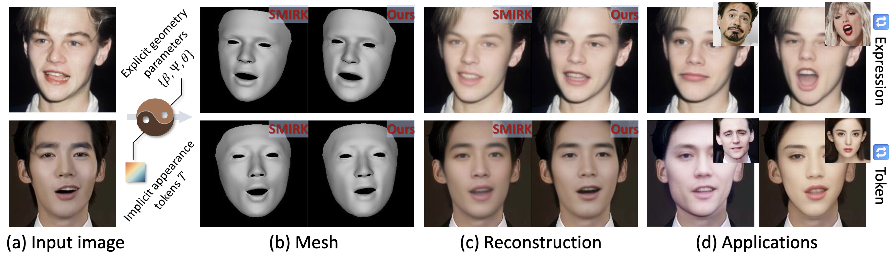
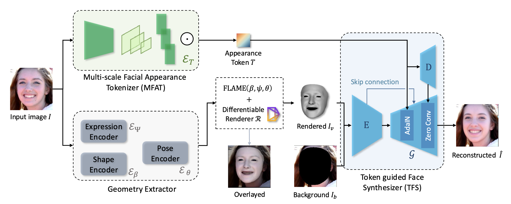
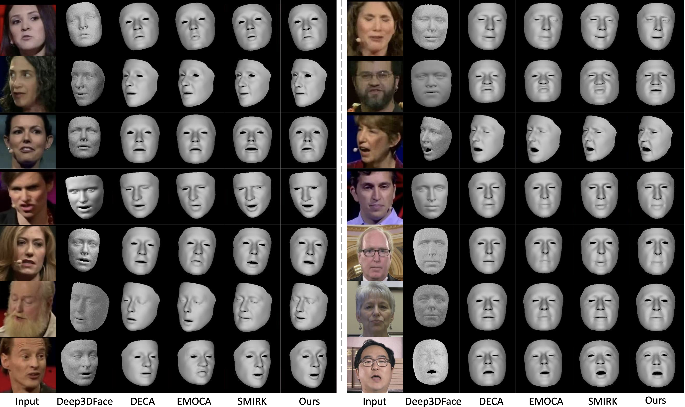

TL;DR: TEASER reconstructs precise 3D facial expression and generates high-fidelity face image through estimating hybrid parameters for 3D facial reconstruction.
3D facial reconstruction from a single in-the-wild image is a crucial task in human-centered computer vision tasks. While existing methods can recover accurate facial shapes, there remains significant space for improvement in fine-grained expression capture. Current approaches struggle with irregular mouth shapes, exaggerated expressions, and asymmetrical facial movements. We present TEASER (Token EnhAnced Spatial modeling for Expressions Reconstruction), which addresses these challenges and enhances 3D facial geometry performance. TEASER tackles two main limitations of existing methods: insufficient photometric loss for self-reconstruction and inaccurate localization of subtle expressions. We introduce a multi-scale tokenizer to extract facial appearance information. Combined with a neural renderer, these tokens provide precise geometric guidance for expression reconstruction. Furthermore, TEASER incorporates a pose-dependent landmark loss to further improve geometric performance. Our approach not only significantly enhances expression reconstruction quality but also offers interpretable tokens suitable for various downstream applications, such as photorealistic facial video driving, expression transfer, and identity swapping. Quantitative and qualitative experimental results across multiple datasets demonstrate that TEASER achieves state-of-the-art performance in precise expression reconstruction.

The framework of TEASER pipeline.
In summary, the main contributions of this paper are as follows:

Visual comparison of 3D face reconstruction with SOTA methods.
More results on LRS3 dataset.
More results on HDTF dataset.
Replace the token with a new one.
Replace the token and shape with a new one.
Expression driven face animation.
@inproceedings{liu2025TEASER,
title={TEASER: Token Enhanced Spatial Modeling for Expressions Reconstruction},
author={Liu, Yunfei and Zhu, Lei and Lin, Lijian and Zhu, Ye and Zhang, Ailing and Li, Yu},
booktitle={ICLR},
year={2025}
}